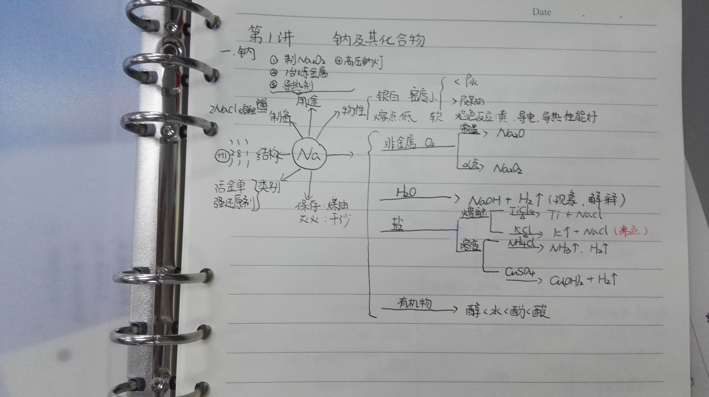
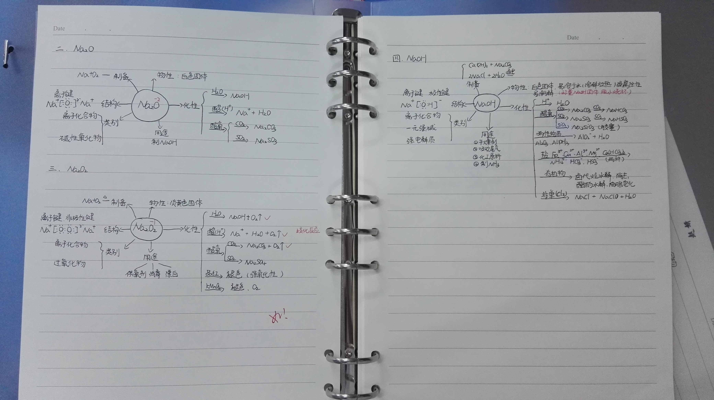
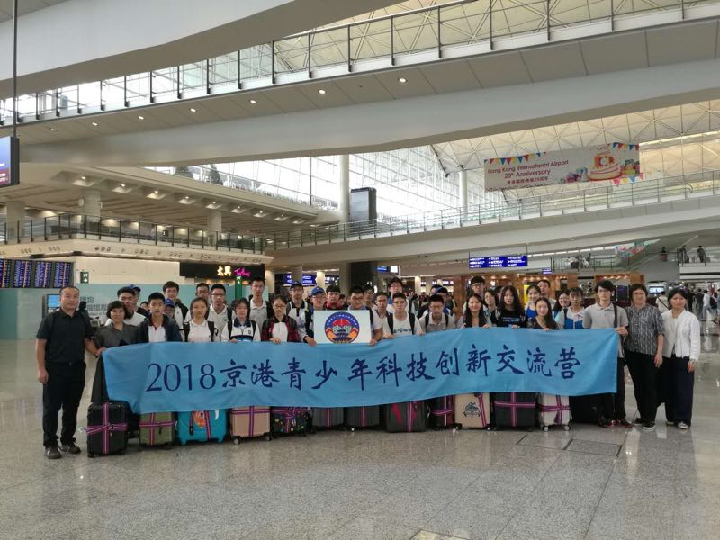
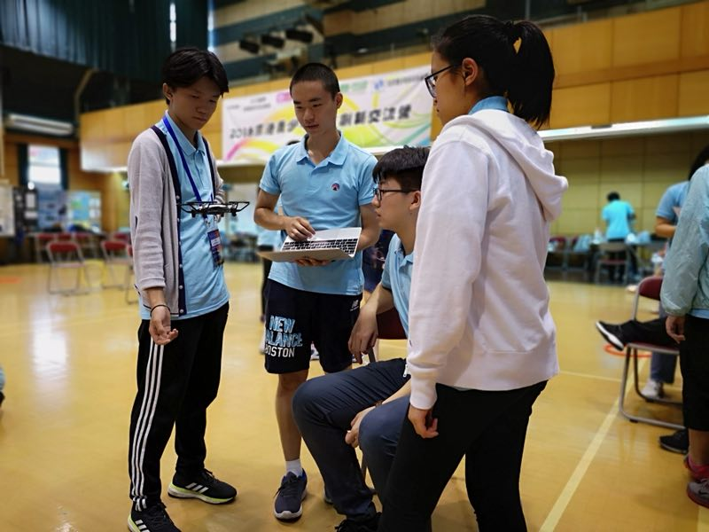
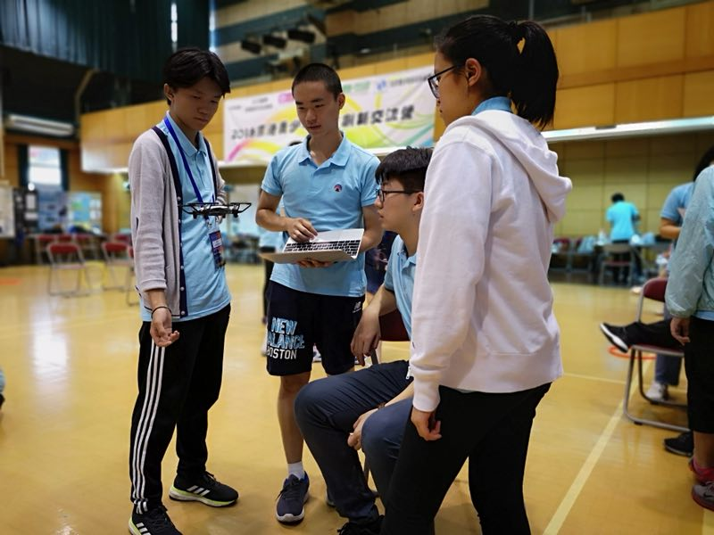

布置教室
誓师大会结束后，班委担负起布置家长会教室的任务。
A website designed by group 5
我们怀揣着希望与憧憬，从懵懂的高（3）一班，通过一步一步地摸索与进步，经由高（3）二班的分别与相遇，终于踏入了高三（3）班迎接高考的神圣课堂。踏入高三，喜讯连连。就在上个“五一小长假”(上周的周五周六)我们得到消息班主任刘宝华同学荣获2018年全国中小学生“学生喜爱的班主任”称号.
在此，我们组代表全班向含辛茹苦为了三班的宝华表示诚挚的感谢。
点击下方文字可到学校官网查看完整新闻
于是，我们开始了愉快的暑假自主答疑辅导生活。为了更好地进行学习生活，我们召开了高三启动誓师大会
与会的同学与老师们喊出强有力的口号向未来的自己加油。破竹之势必不可挡。


誓师后，老师、家长、同学、校长各派代表上台发言，他们的言谈让我们深省。
最后颁发本学期优秀班干部和三好学生奖状。

点击下方文字可到学校官网查看完整新闻
誓师大会结束后，班委担负起布置家长会教室的任务。

誓师大会结束后，班委担负起布置家长会教室的任务。
誓师大会结束后，班委担负起布置家长会教室的任务。
誓师大会结束后，班委担负起布置家长会教室的任务。
分班家长会概况

分班家长会概况

分班家长会概况
分班家长会概况
即使不是工作日，同学们的求知欲和老师们的辛勤付出在酷暑中也丝毫未减。

即使天气恶劣，哪怕狂风暴雨和倒下的树仍不能阻挡我们学习前进的步伐。

即使天气燥热，高标尊严要求和严谨踏实依然是清华附中朝阳学校莘莘学子的座右铭。




不仅学校里的同学们努力拼搏，参加夏令营的同学们也在为提高自己的能力水平而奋斗。
让我们期待他们的好成绩。

 


本周四会考成绩公布，全班同学几乎两科都得了A。我们的好成绩离不开宁（níng）特和苏老师会考前废寝忘食的教导。这也标志着生政会考阶段彻底结束，机遇与挑战并存的高考阶段正悄然向我们走来。
虽然这一周总体上说过得飞快而平凡，但每天每个小细节上同学们都在不同程度地进步着。同学们满怀激情的投入暑期学习生活，想必一定为正式的高三生活做好了准备，在砥砺自我中走向成功。
这一周的波澜不惊是为了接下来各种考核同学们成绩的绽放，抓住机遇，迎接挑战！
PS：下周高三（3）班会有一位嘉宾回归，敬请期待！
组长：杨舒茗
组员：马骁
邵佳泓
张元培